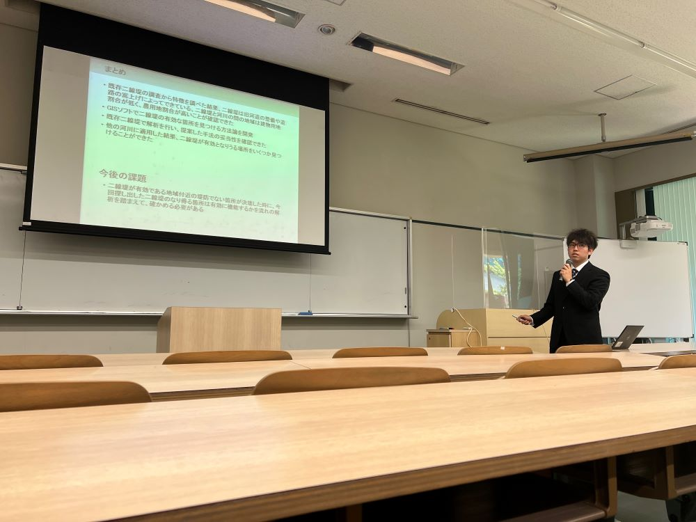
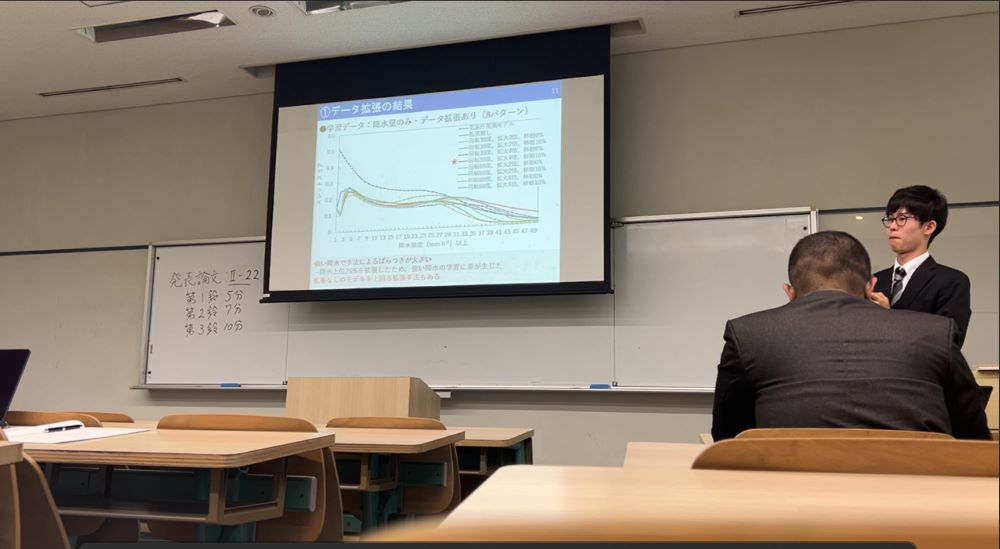
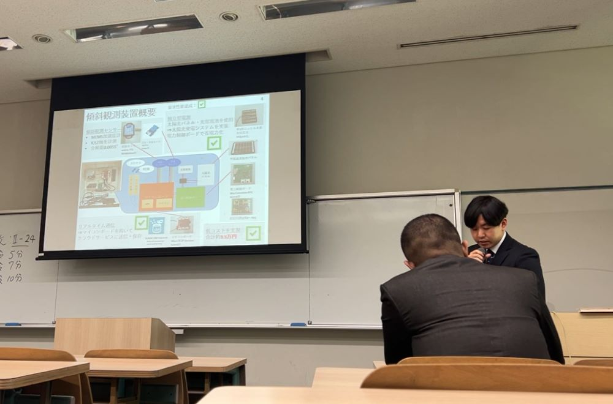
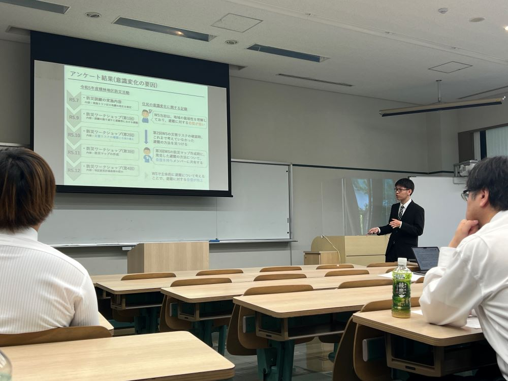
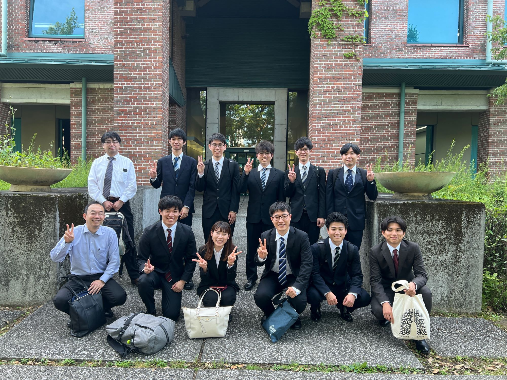

mizukan
イベント
土木学会四国支部 第30回技術研究発表会
6月1日（土）、高知工科大学で土木学会四国支部第３０回技術研究発表会が開催されました！
この発表会は、四国にある大学や高等専門学校、
それから企業の方がこれまで行ってきた研究の成果を披露する場です！
当研究室も毎年数名がこの発表会で発表を行っています。


今年も他の方々の発表を聴講し、同じテーマであっても異なるアプローチや研究方法が用いられていることに気付き、大変勉強になりました。
今年は，安達さん，花本さん，奥山さん，平尾さん，丸井君の５人が発表しました！
昨年度の成果を多くの方に披露できて、とても良かったです。来年度も同様に研究の成果を発表できるよう、今年一年も研究に全力で取り組みたいと思います。


学会が終わった後に記念撮影しました！ 発表お疲れ様でした！

文責 丸井,澤井